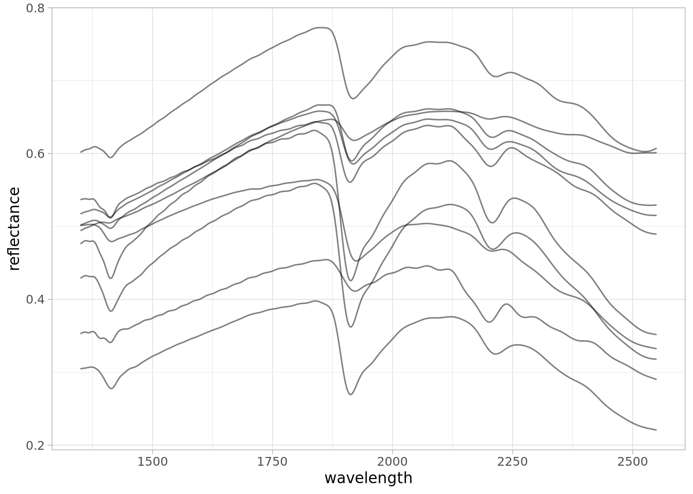
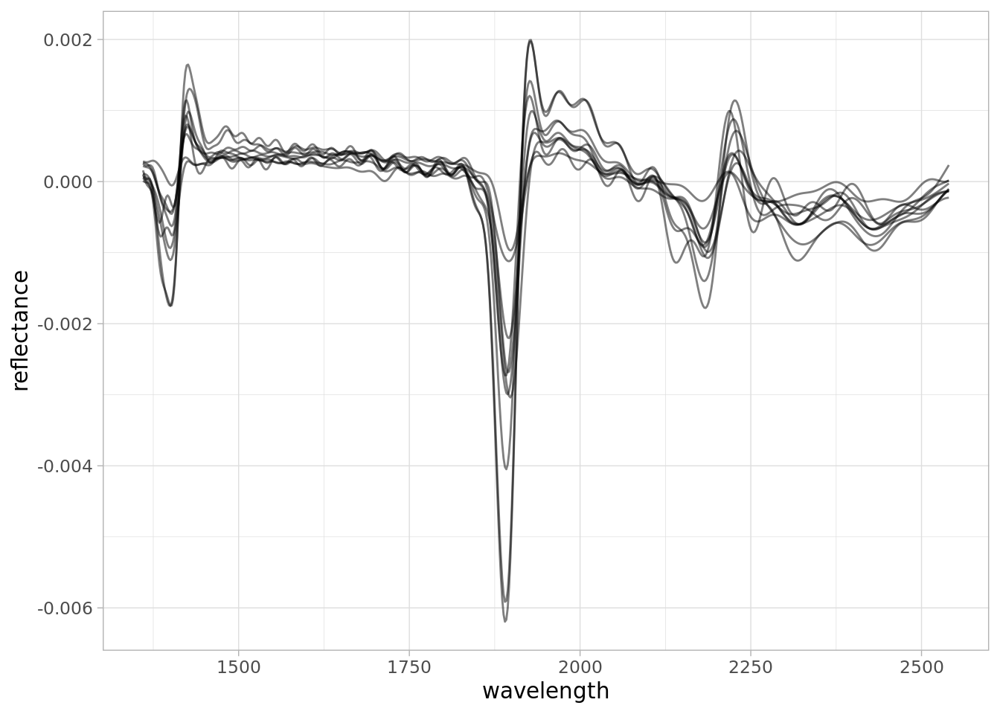
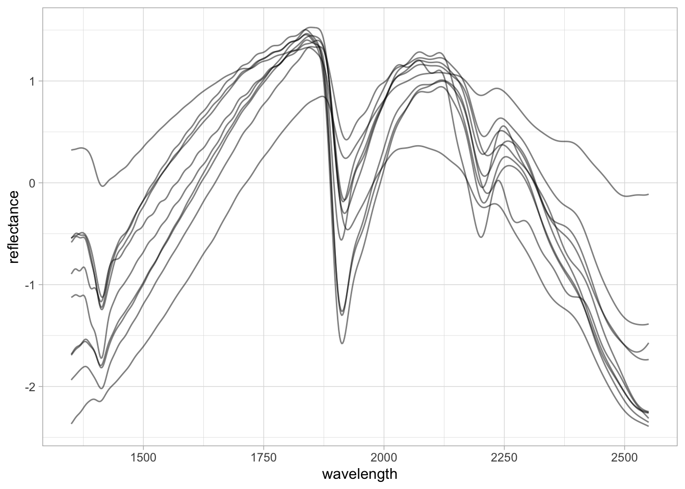
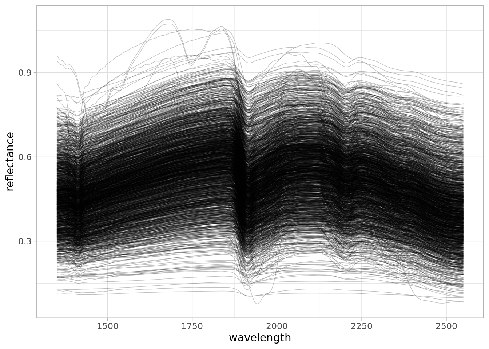
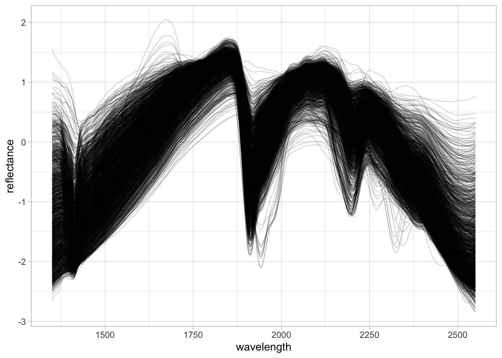
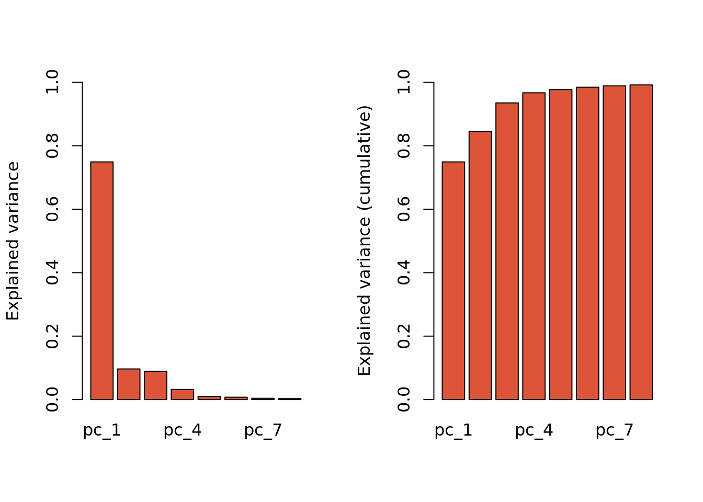
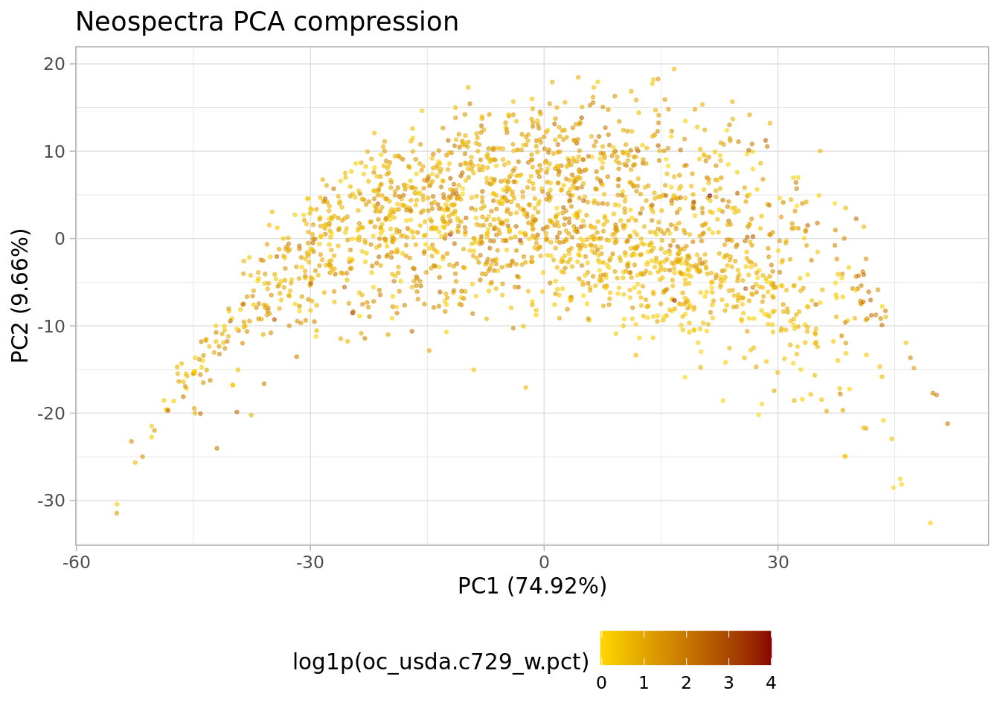
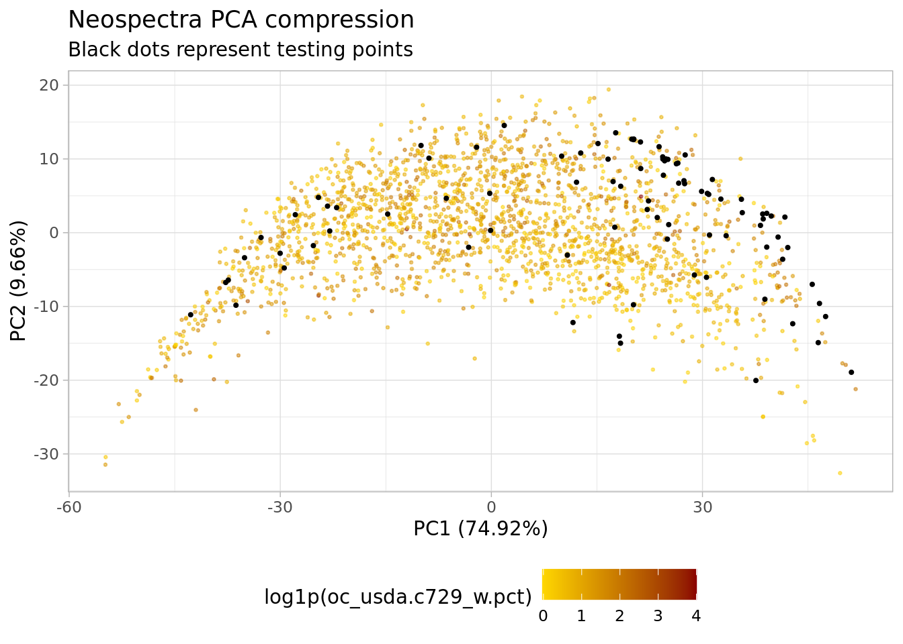
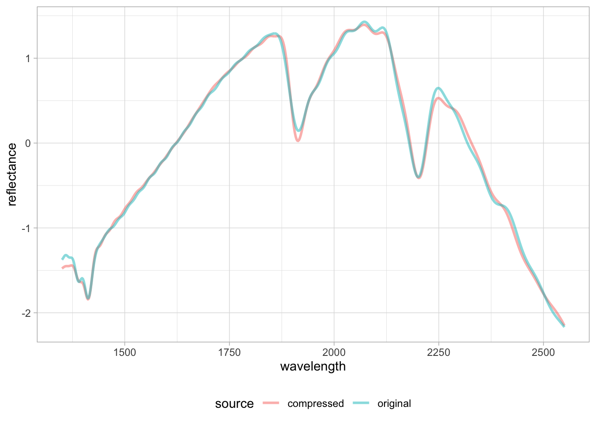
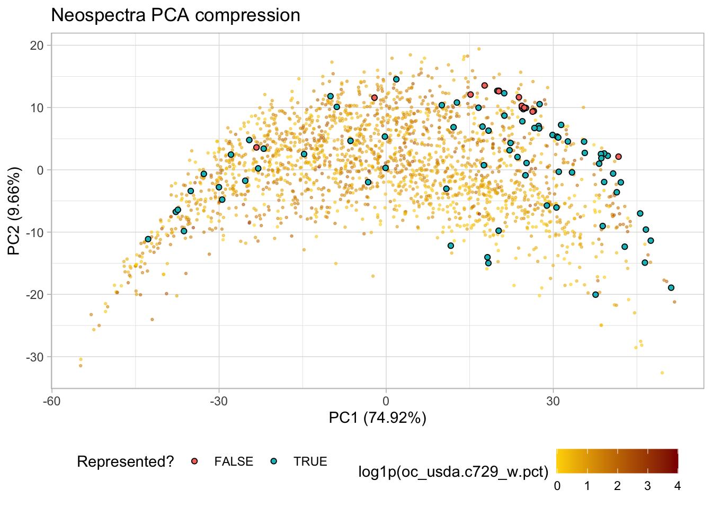

my.wd <- "~/projects/local-files/soilspec_training"
# Or within an RStudio project
# my.wd <- getwd()2 Processing
In this section of the training workshop, we dive into the basic processing operations of soil spectroscopy data. This includes importing spectral data, making tabular and element-wise operations, visualization, resampling, preprocessing, and compression.
At the end, we will produce two files using a specific processing pipeline (train.csv and test.csv) that will be employed in the next Machine Learning section.
It is important to mention that all files are being saved to an external working directory, i.e., we are not storing big files inside this GitHub and book repository.
You can set an external folder as your working directory and RStudio project, and copy/paste the code chunks of this session into plain R scripts.
Please, set the working directory (or create an RStudio project) in your local machine:
A list of all required packages for this section is provided in the following code chunk. You will see that some specific/special functions are highlighted in the text by linking back the function with the original package using the package::function() syntax:
library("tidyverse")
library("asdreader")
library("opusreader2")
library("prospectr")
library("qs")
library("moments")
library("resemble")2.1 Importing spectra
At the beginning of a project, we need to import the spectral measurements as raw binary files (like ASD and OPUS files) or other text/data file formats that are commonly used across different software, for instance, a CSV file.
For learning some of the common operations of this part, let’s use some of the datasets shared through the Open Soil Spectral Library (OSSL). The OSSL has data for different spectral regions: visible and near-infrared [VisNIR, 350-2500 nm], near-infrared [NIR, 1350-2550 nm], and middle-infrared (MIR, 4000-600 cm-1).
A common raw format for VisNIR measurements is the .asd. This format is used across the Malvern Panalytical instruments, like the ASD FieldSpec models. In R, we can import ASD files using the asdreader package. After downloading an example .asd file, we can use the function asdreader::get_spectra() by indicating the local file path. The imported spectra is a matrix with 1 row and 2551 columns, with column names as integer numbers (wavelength, nm) ranging from 350 to 2500 nm.
# Downloading an .asd file
visnir.spectra.url <- "https://github.com/soilspectroscopy/ossl-models/raw/main/sample-data/101453MD01.asd"
visnir.spectra.path <- file.path(my.wd, "file1.asd")
download.file(url = visnir.spectra.url,
destfile = visnir.spectra.path,
mode = "wb")
# Reading asd file
visnir.spectra <- asdreader::get_spectra(visnir.spectra.path)
# Inspecting the file
class(visnir.spectra)[1] "matrix" "array" dim(visnir.spectra)[1] 1 2151visnir.spectra[1,1:5] 350 351 352 353 354
0.09088564 0.09550782 0.09147028 0.08838938 0.08888854 # Spectral range
range(as.numeric(colnames(visnir.spectra)))[1] 350 2500The same operation can be done with some MIR measurements. The OPUS file (.0) is a common binary file format used across the instruments of Bruker Optics GmbH & Co. According to the original producers of opusreader2:
(…) opusreader2 is a state-of-the-art [opus] binary reader. We recommend the package as a solid foundation for your spectroscopy workflow. It is modular and has no hard dependencies apart from base R. (…) The Bruker corporation manufactures reliable instruments but there is no official documentation of the OPUS file format.
As the OPUS format is proprietary, spectra-cockipit.space and the open source community have cracked and reverse-engineered the binary files to be open directly in R. After downloading an example .0 file from the OSSL project, we can use the function opusreader2::read_opus_single() by just indicating the local file path. The imported spectra is a list with several information (metadata and spectral data), with the spectra having column names formatted as floating numbers (wavenumbers, cm-1) due to the Fourier Transformation, and ranging from 599.7663 to 7498.0428 cm-1.
# Downloading an .0 file
mir.spectra.url <- "https://github.com/soilspectroscopy/ossl-models/raw/main/sample-data/235157XS01.0"
mir.spectra.path <- file.path(my.wd, "file2.0")
download.file(url = mir.spectra.url,
destfile = mir.spectra.path,
mode = "wb")
# Reading asd file
mir.spectra <- opusreader2::read_opus_single(dsn = mir.spectra.path)
# Inspecting the file
class(mir.spectra)[1] "list"names(mir.spectra) [1] "basic_metadata" "ab_data_param"
[3] "ab" "quant_report_ab"
[5] "sc_sample_data_param" "sc_sample"
[7] "ig_sample_data_param" "ig_sample"
[9] "sc_ref_data_param" "sc_ref"
[11] "ig_ref_data_param" "ig_ref"
[13] "optics" "optics_ref"
[15] "acquisition_ref" "fourier_transformation_ref"
[17] "fourier_transformation" "sample"
[19] "acquisition" "instrument_ref"
[21] "instrument" "lab_and_process_param_processed"
[23] "info_block" "history" # Spectra is stored in file$ab$data
class(mir.spectra$ab$data)[1] "matrix" "array" dim(mir.spectra$ab$data)[1] 1 3578# Spectral range
range(as.numeric(colnames(mir.spectra$ab$data)))[1] 599.7663 7498.0428In many cases, instead of importing the raw binary files, we can directly import a CSV exported from those spectral instruments and their accompanying software. For example, using an example CSV file exported from a Neospectra device that is also available through the OSSL project, the imported spectra is a table with scans in the rows, the first column as ID, and the spectra having column names formatted as floating numbers (wavelength, nm) due to the Fourier Transformation, ranging in this case, from 1350 to 2550 nm.
# Downloading an csv output from Neospectra
nir.spectra.url <- "https://github.com/soilspectroscopy/ossl-models/raw/main/sample-data/sample_neospectra_data.csv"
nir.spectra.path <- file.path(my.wd, "file3.csv")
download.file(url = nir.spectra.url,
destfile = nir.spectra.path,
mode = "wb")
# Reading csv file
nir.spectra <- readr::read_csv(nir.spectra.path)
# Inspecting the file
class(nir.spectra)[1] "spec_tbl_df" "tbl_df" "tbl" "data.frame" nir.spectra[1:5,1:5]# A tibble: 5 × 5
sample_id `2549.999982` `2541.176458` `2532.413785` `2523.711336`
<dbl> <dbl> <dbl> <dbl> <dbl>
1 1 22.1 22.2 22.3 22.4
2 2 60.8 60.5 60.3 60.3
3 3 51.5 51.5 51.6 51.7
4 4 35.2 35.3 35.4 35.6
5 5 49.0 49.0 49.1 49.3# Spectral range after removing first column
range(as.numeric(colnames(nir.spectra[,-1])))[1] 1350 25502.2 Tabular operations
When we upload spectra into R, we usually need to perform some operations across rows, columns, or in an element-wise mode. For example, the measurement unit may differ across instruments and spectral ranges, so when we integrate different datasets, we need to harmonize the original datasets to a specific format.
Using the Neospectra example dataset imported in the previous subsection, we can see that the scale of the measurements is provided in percent units. Rather than having the data in 0-100% percent units, we can transform it to reflectance factor units in the 0-1 interval and keep 5 decimal places of precision.
# Original data
nir.spectra[1:5,1:5]# A tibble: 5 × 5
sample_id `2549.999982` `2541.176458` `2532.413785` `2523.711336`
<dbl> <dbl> <dbl> <dbl> <dbl>
1 1 22.1 22.2 22.3 22.4
2 2 60.8 60.5 60.3 60.3
3 3 51.5 51.5 51.6 51.7
4 4 35.2 35.3 35.4 35.6
5 5 49.0 49.0 49.1 49.3# Spectra column names
spectra.column.names <- nir.spectra %>%
select(-sample_id) %>%
names()
# Transforming reflectance (%) to reflectance factor (decimal, 0-1)
# Also, rounding to 5 decimal places of precision
nir.spectra.rf <- nir.spectra %>%
mutate(across(all_of(spectra.column.names), ~round(.x/100, 5)))
nir.spectra.rf[1:5,1:5]# A tibble: 5 × 5
sample_id `2549.999982` `2541.176458` `2532.413785` `2523.711336`
<dbl> <dbl> <dbl> <dbl> <dbl>
1 1 0.221 0.222 0.223 0.224
2 2 0.608 0.605 0.603 0.603
3 3 0.515 0.515 0.516 0.517
4 4 0.352 0.353 0.354 0.356
5 5 0.490 0.490 0.491 0.493We can also use the same element-wise operations to transform data in absorbance (A, in log10 units) or reflectance (R, reflectance factor 0-1). This is not run here, but the following equations and R code can be used:
- Absorbance from reflectance: \[A=\log_{10}\left(\frac{1}{R}\right)\] or
mutate(across(all_of(spectra.column.names), ~round(log10(1/.x), 5))).
- Reflectance from absorbance: \[R=\frac{1}{10^{A}}\] or
mutate(across(all_of(spectra.column.names), ~round(1/(10^.x), 5))).
2.3 Visualization
Another important operation is to to be able to visualize the spectra. For this task, we can use the ggplot2 package after pivoting the [wide] table to a long version that stores the data in two new columns: wavelength (x variable) and reflectance (y variable).
## Pivot to long format
nir.spectra.rf.long <- nir.spectra.rf %>%
pivot_longer(all_of(spectra.column.names),
names_to = "wavelength",
values_to = "reflectance") %>%
mutate(wavelength = as.numeric(wavelength),
reflectance = as.numeric(reflectance))
head(nir.spectra.rf.long)# A tibble: 6 × 3
sample_id wavelength reflectance
<dbl> <dbl> <dbl>
1 1 2550. 0.221
2 1 2541. 0.222
3 1 2532. 0.223
4 1 2524. 0.224
5 1 2515. 0.226
6 1 2506. 0.228## Visualization
ggplot(data = nir.spectra.rf.long) +
geom_line(aes(x = wavelength, y = reflectance,
group = sample_id),
alpha = 0.5, linewidth = 0.5) +
theme_light()2.4 Resampling spectra
From the previous table views, we saw the spectral column headers are being represented by an uneven interval with floating numbers. We can resample or harmonize the spectra (using the prospectr R package) to a defined range with an even interval (e.g. 2 nm) using spline interpolation. For this, we need to use the spectra stored as a wide table
Note
Linear and spline interpolation do not work outside of the original range. If you have missing data out of the original range, you must use a different approach like imputation to fill the gaps.
# Old columns, reversed, and as numeric
old.wavelength <- as.numeric(rev(spectra.column.names))
head(old.wavelength)[1] 1350.000 1352.487 1354.982 1357.486 1360.000 1362.524# New columns, increasing order, spaced 2 nm
new.wavelength <- seq(1350, 2550, by = 2)
head(new.wavelength)[1] 1350 1352 1354 1356 1358 1360
Tip
Dot (.) is used as a placeholder for the previous output of the pipe. We can create quick internal pipes with brackets {}.
# Selecting old spectra in increasing order
# Parse to matrix (input of prospectr::resample)
# Resample
# Parse to tibble
# Bind to original sample ids
nir.spectra.rf.int <- nir.spectra.rf %>%
select(all_of(rev(spectra.column.names))) %>%
as.matrix() %>%
prospectr::resample(X = .,
wav = old.wavelength,
new.wav = new.wavelength,
interpol = "spline") %>%
as_tibble() %>%
bind_cols({nir.spectra.rf %>%
select(sample_id)}, .)
nir.spectra.rf.int[1:5,1:5]# A tibble: 5 × 5
sample_id `1350` `1352` `1354` `1356`
<dbl> <dbl> <dbl> <dbl> <dbl>
1 1 0.305 0.305 0.305 0.305
2 2 0.602 0.602 0.603 0.604
3 3 0.517 0.518 0.518 0.519
4 4 0.476 0.477 0.478 0.479
5 5 0.537 0.537 0.537 0.538The harmonization/resample results in the same spectral patterns, but now the data is well formatted.
Tip
We can pipe together pivot, mutate, and ggplot operations.
new.spectra.column.names <- as.character(new.wavelength)
nir.spectra.rf.int %>%
pivot_longer(all_of(new.spectra.column.names),
names_to = "wavelength",
values_to = "reflectance") %>%
mutate(wavelength = as.numeric(wavelength),
reflectance = as.numeric(reflectance)) %>%
ggplot(data = .) +
geom_line(aes(x = wavelength, y = reflectance, group = sample_id),
alpha = 0.5, linewidth = 0.5) +
theme_light()
2.5 Preprocessing
prospectr is a very useful package for signal processing and chemometrics as it contains various utilities for working with spectral data. As stated in the package vignette:
The aim of spectral preprocessing is to enhance signal quality before modeling as well as to remove physical information from the spectra. Applying a pre-treatment can increase the repeatability/reproducibility of the method, model robustness and accuracy, although there are no guarantees this will actually work.
There are several algorithms available through prospectr and elsewhere, e.g. listed in Table 1 of its vignette. However, in this section we are going to showcase only a few that are more common: Savitzky–Golay (SG) smoothing and derivatives, and Standard Normal Variate (SNV).
Savitzky–Golay is an algorithm that fits a moving local polynomial regression that can smooth and/or derive the spectra (using the fitted polynomial) to enhance the signal quality and absorption features. The parameters are the polynomial order (p), the half-window size to sample and fit the spectra (w), the derivative order (m, where m = 0 is used for smoothing and m > 1 are the respective derivatives), and the spacing interval (delta.wav). When we use the SG algorithm, the edges of the spectral range are reduced by one half-window size minus the center.
Except for delta.wav, we can fine tune all of these parameters to find the best preprocessing combination, although several studies have already explored and we can adopt what has been recommended (Dotto et al. 2018; Seybold et al. 2019; Barra et al. 2021). In this example, we are going to use the first-derivative of a second-order polynomial regression with a half-window size of 11 nm.
# Select spectra columns
# Parse to matrix (input of prospectr::savitzkyGolay)
# Apply preprocessing
# Parse to tibble
# Bind the spectra to id column
nir.spectra.sg <- nir.spectra.rf.int %>%
select(all_of(new.spectra.column.names)) %>%
as.matrix() %>%
savitzkyGolay(X = ., p = 2, w = 11, m = 1, delta.wav = 2) %>%
as_tibble() %>%
bind_cols({nir.spectra.rf %>%
select(sample_id)}, .)
nir.spectra.sg[1:5,1:5]# A tibble: 5 × 5
sample_id `1360` `1362` `1364` `1366`
<dbl> <dbl> <dbl> <dbl> <dbl>
1 1 0.000112 0.000108 0.000101 0.0000887
2 2 0.000255 0.000236 0.000225 0.000223
3 3 0.000221 0.000212 0.000206 0.000201
4 4 0.000158 0.0000929 0.0000379 -0.00000238
5 5 0.0000111 -0.00000283 -0.0000104 -0.0000139 Moving-window first-derivatives are great because they preserve the orientation of the absorption features and enhance only the important regions of the spectra. For more complex spectra, however, this may hamper the interpretation.
Tip
dplyr allows us to use column selectors like first(), everything(), all_of etc. As we now have a shorter spectral range, rather than using all_of(new.spectra.column.names) we can replace it with any_of(new.spectra.column.names) to select any of the available columns.
nir.spectra.sg %>%
pivot_longer(any_of(new.spectra.column.names),
names_to = "wavelength",
values_to = "reflectance") %>%
mutate(wavelength = as.numeric(wavelength),
reflectance = as.numeric(reflectance)) %>%
ggplot(data = .) +
geom_line(aes(x = wavelength, y = reflectance, group = sample_id),
alpha = 0.5, linewidth = 0.5) +
theme_light()
Another very common preprocessing is the Standard Normal Variate (SNV). SNV is a normalization algorithm (centers to mean 0 and rescales to 1 standard deviation) that works across the spectrum (row-wise). This preprocessing changes both the range of values and the amplitude of the curves and is intended to correct the scattering of light.
SNV was originally proposed to deal with multiplicative effects of particle size, light scatter, and multicollinearity issues in diffuse reflectance spectroscopy (Barnes, Dhanoa, and Lister 1989). Although the first derivative has been routinely used in soil spectroscopy studies, SNV is in many cases preferred because it does not affect the interpretation of the spectral features.
# Select spectra columns
# Parse to matrix (input of prospectr::savitzkyGolay)
# Apply preprocessing
# Parse to tibble
# Bind the spectra to id column
nir.spectra.snv <- nir.spectra.rf.int %>%
select(all_of(new.spectra.column.names)) %>%
as.matrix() %>%
prospectr::standardNormalVariate(X = .) %>%
as_tibble() %>%
bind_cols({nir.spectra.rf %>%
select(sample_id)}, .)
nir.spectra.sg[1:5,1:5]# A tibble: 5 × 5
sample_id `1360` `1362` `1364` `1366`
<dbl> <dbl> <dbl> <dbl> <dbl>
1 1 0.000112 0.000108 0.000101 0.0000887
2 2 0.000255 0.000236 0.000225 0.000223
3 3 0.000221 0.000212 0.000206 0.000201
4 4 0.000158 0.0000929 0.0000379 -0.00000238
5 5 0.0000111 -0.00000283 -0.0000104 -0.0000139 nir.spectra.snv %>%
pivot_longer(any_of(new.spectra.column.names),
names_to = "wavelength",
values_to = "reflectance") %>%
mutate(wavelength = as.numeric(wavelength),
reflectance = as.numeric(reflectance)) %>%
ggplot(data = .) +
geom_line(aes(x = wavelength, y = reflectance, group = sample_id),
alpha = 0.5, linewidth = 0.5) +
theme_light()
2.6 Preparing machine learning dataset
For the Machine Learning task and compression/projection, we will use the NIR Neospectra Handheld database shared as part of the OSSL that contains more than 2000 unique soil samples scanned in replicates with different devices (identified by serial number).
We will prepare a case-study dataset using several operations that include reading, filtering, preprocessing with SNV, and compressing the spectra with PCA to predict Soil Organic Carbon (SOC).
## Internet configuration for downloading big datasets
options(timeout = 10000)
## Reading serialized files
neospectra.soil <- qread_url("https://storage.googleapis.com/soilspec4gg-public/neospectra_soillab_v1.2.qs")
dim(neospectra.soil)[1] 2106 24neospectra.soil[1:5,1:5] id.sample_local_c oc_usda.c729_w.pct c.tot_usda.a622_w.pct
1 26949 3.2 NA
2 26950 1.7 NA
3 26951 0.6 NA
4 26952 0.2 NA
5 26953 0.2 NA
n.tot_usda.a623_w.pct s.tot_usda.a624_w.pct
1 0.31 NA
2 0.19 NA
3 0.09 NA
4 0.06 NA
5 0.06 NAneospectra.site <- qread_url("https://storage.googleapis.com/soilspec4gg-public/neospectra_soilsite_v1.2.qs")
dim(neospectra.site)[1] 2106 32neospectra.site[1:5,1:5]# A tibble: 5 × 5
id.sample_local_c id.layer_local_c longitude.point_wgs84_dd
<chr> <chr> <dbl>
1 100540 37268 -96.6
2 101337 37480 -121.
3 101343 37486 -121.
4 101372 37515 -121.
5 102078 37798 -101.
# ℹ 2 more variables: latitude.point_wgs84_dd <dbl>,
# location.point.error_any_m <dbl>neospectra.nir <- qread_url("https://storage.googleapis.com/soilspec4gg-public/neospectra_nir_v1.2.qs")
dim(neospectra.nir)[1] 8151 615neospectra.nir[1:5,1:5]# A tibble: 5 × 5
id.sample_local_c id.scan_local_c scan.lab_utf8_txt scan.nir.date.begin_iso.…¹
<chr> <chr> <chr> <chr>
1 30747 NEO1_030747 Woodwell 2021-01-01
2 36001 NEO1_036001 Woodwell 2021-01-01
3 36035 NEO1_036035 Woodwell 2021-01-01
4 36224 NEO1_036224 Woodwell 2021-01-01
5 36261 NEO1_036261 Woodwell 2021-01-01
# ℹ abbreviated name: ¹scan.nir.date.begin_iso.8601_yyyy.mm.dd
# ℹ 1 more variable: scan.nir.date.end_iso.8601_yyyy.mm.dd <chr>Once we download the database, we can see that we have 2,106 unique soil samples and more than 8,000 measurements. We need to explore it a bit further and calculate the average spectra across the different devices, so each soil sample is linked to a unique measurement. We also select only the relevant information for using in further processing:
- Soil sample id:
id.sample_local_c.
- Origin country:
location.country_iso.3166_txt.
- Organic carbon content (%):
oc_usda.c729_w.pct.
- Average NIR spectra: columns starting with
scan_nir.
# Column names
neospectra.site %>%
names() [1] "id.sample_local_c"
[2] "id.layer_local_c"
[3] "longitude.point_wgs84_dd"
[4] "latitude.point_wgs84_dd"
[5] "location.point.error_any_m"
[6] "layer.upper.depth_usda_cm"
[7] "layer.lower.depth_usda_cm"
[8] "layer.sequence_usda_uint16"
[9] "id.project_ascii_txt"
[10] "id.location_olc_txt"
[11] "location.country_iso.3166_txt"
[12] "layer.texture_usda_txt"
[13] "pedon.taxa_usda_txt"
[14] "horizon.designation_usda_txt"
[15] "observation.date.begin_iso.8601_yyyy.mm.dd"
[16] "observation.date.end_iso.8601_yyyy.mm.dd"
[17] "longitude.county_wgs84_dd"
[18] "latitude.county_wgs84_dd"
[19] "observation.ogc.schema.title_ogc_txt"
[20] "observation.ogc.schema_idn_url"
[21] "dataset.code_ascii_txt"
[22] "dataset.title_utf8_txt"
[23] "dataset.owner_utf8_txt"
[24] "dataset.address_idn_url"
[25] "dataset.doi_idf_url"
[26] "surveyor.title_utf8_txt"
[27] "surveyor.contact_ietf_email"
[28] "surveyor.address_utf8_txt"
[29] "dataset.license.title_ascii_txt"
[30] "dataset.license.address_idn_url"
[31] "dataset.contact.name_utf8_txt"
[32] "dataset.contact_ietf_email" neospectra.soil %>%
names() [1] "id.sample_local_c" "oc_usda.c729_w.pct"
[3] "c.tot_usda.a622_w.pct" "n.tot_usda.a623_w.pct"
[5] "s.tot_usda.a624_w.pct" "ph.h2o_usda.a268_index"
[7] "bd_usda.a4_g.cm3" "clay.tot_usda.a334_w.pct"
[9] "silt.tot_usda.c62_w.pct" "sand.tot_usda.c60_w.pct"
[11] "caco3_usda.a54_w.pct" "efferv_usda.a479_class"
[13] "cec_usda.a723_cmolc.kg" "ca.ext_usda.a722_cmolc.kg"
[15] "mg.ext_usda.a724_cmolc.kg" "k.ext_usda.a725_cmolc.kg"
[17] "na.ext_usda.a726_cmolc.kg" "wr.33kPa_usda.a415_w.pct"
[19] "wr.1500kPa_usda.a417_w.pct" "al.dith_usda.a65_w.pct"
[21] "p.ext_usda.a652_mg.kg" "p.ext_usda.a1070_mg.kg"
[23] "k.ext_usda.a1065_mg.kg" "ec_usda.a364_ds.m" neospectra.nir %>%
select(1:20) %>%
names() [1] "id.sample_local_c"
[2] "id.scan_local_c"
[3] "scan.lab_utf8_txt"
[4] "scan.nir.date.begin_iso.8601_yyyy.mm.dd"
[5] "scan.nir.date.end_iso.8601_yyyy.mm.dd"
[6] "scan.nir.model.name_utf8_txt"
[7] "scan.nir.model.serialnumber_utf8_int"
[8] "scan.nir.accessory.used_utf8_txt"
[9] "scan.nir.method.preparation_any_txt"
[10] "scan.nir.license.title_ascii_txt"
[11] "scan.nir.license.address_idn_url"
[12] "scan.nir.doi_idf_url"
[13] "scan.nir.contact.name_utf8_txt"
[14] "scan.nir.contact.email_ietf_txt"
[15] "scan_nir.1350_ref"
[16] "scan_nir.1352_ref"
[17] "scan_nir.1354_ref"
[18] "scan_nir.1356_ref"
[19] "scan_nir.1358_ref"
[20] "scan_nir.1360_ref" # How many distinct id.sample_local_c in the NIR file?
neospectra.nir %>%
distinct(id.sample_local_c) %>%
nrow()[1] 2106# How many distinct countries and samples from?
# 2016 samples from USA, other from African countries
# We can use this columns to split and block datasets
neospectra.site %>%
count(location.country_iso.3166_txt)# A tibble: 4 × 2
location.country_iso.3166_txt n
<chr> <int>
1 GHA 66
2 KEN 10
3 NGA 14
4 USA 2016# Selecting relevant site data
neospectra.site <- neospectra.site %>%
select(id.sample_local_c, location.country_iso.3166_txt)
# Selecting relevant soil data
neospectra.soil <- neospectra.soil %>%
select(id.sample_local_c, oc_usda.c729_w.pct)
# Selecting relevant NIR data and taking average across repeats
neospectra.nir <- neospectra.nir %>%
select(id.sample_local_c, starts_with("scan_nir")) %>%
group_by(id.sample_local_c) %>%
summarise_all(mean, .group = "drop")
# Renaming spectral columns headers to numeric integers
neospectra.nir %>%
select(starts_with("scan_nir")) %>%
names() %>%
head()[1] "scan_nir.1350_ref" "scan_nir.1352_ref" "scan_nir.1354_ref"
[4] "scan_nir.1356_ref" "scan_nir.1358_ref" "scan_nir.1360_ref"old.names <- neospectra.nir %>%
select(starts_with("scan_nir")) %>%
names()
new.names <- gsub("scan_nir.|_ref", "", old.names)
neospectra.nir <- neospectra.nir %>%
rename_with(~new.names, all_of(old.names))
spectral.column.names <- new.names
neospectra.nir[1:5,1:5]# A tibble: 5 × 5
id.sample_local_c `1350` `1352` `1354` `1356`
<chr> <dbl> <dbl> <dbl> <dbl>
1 100540 0.350 0.351 0.351 0.352
2 101337 0.375 0.375 0.376 0.376
3 101343 0.250 0.250 0.251 0.251
4 101372 0.463 0.464 0.464 0.465
5 102078 0.344 0.344 0.345 0.346Spectral visualization.
neospectra.nir %>%
pivot_longer(any_of(spectral.column.names),
names_to = "wavelength",
values_to = "reflectance") %>%
mutate(wavelength = as.numeric(wavelength),
reflectance = as.numeric(reflectance)) %>%
ggplot(data = .) +
geom_line(aes(x = wavelength, y = reflectance, group = id.sample_local_c),
alpha = 0.25, linewidth = 0.25) +
theme_light()
Preprocessing with Standard Normal Variate (SNV).
neospectra.nir.snv <- neospectra.nir %>%
select(all_of(spectral.column.names)) %>%
as.matrix() %>%
prospectr::standardNormalVariate(X = .) %>%
as_tibble() %>%
bind_cols({neospectra.nir %>%
select(id.sample_local_c)}, .)
neospectra.nir.snv %>%
pivot_longer(any_of(spectral.column.names),
names_to = "wavelength",
values_to = "reflectance") %>%
mutate(wavelength = as.numeric(wavelength),
reflectance = as.numeric(reflectance)) %>%
ggplot(data = .) +
geom_line(aes(x = wavelength, y = reflectance, group = id.sample_local_c),
alpha = 0.25, linewidth = 0.25) +
theme_light()
Joining data and spliting for train/test
# Joining data
neospectra <- left_join(neospectra.site,
neospectra.soil,
by = "id.sample_local_c") %>%
left_join(., neospectra.nir.snv, by = "id.sample_local_c")
# Filtering out samples without SOC values
neospectra <- neospectra %>%
filter(!is.na(oc_usda.c729_w.pct))
neospectra[1:5,1:5]# A tibble: 5 × 5
id.sample_local_c location.country_iso.3166…¹ oc_usda.c729_w.pct `1350` `1352`
<chr> <chr> <dbl> <dbl> <dbl>
1 100540 USA 3.19 -1.52 -1.51
2 101337 USA 8.43 -0.835 -0.821
3 101343 USA 0.69 -1.93 -1.91
4 101372 USA 1.81 -1.10 -1.09
5 102078 USA 1.75 -1.77 -1.75
# ℹ abbreviated name: ¹location.country_iso.3166_txt# Preparing train and test split
neospectra.train <- neospectra %>%
filter(location.country_iso.3166_txt == "USA")
neospectra.test <- neospectra %>%
filter(location.country_iso.3166_txt != "USA")2.7 Spectral compression and projection
Another interesting operation that is routinely employed in soil spectroscopy is the compression and projection of the spectra into new coordinate systems.

Partial Least Squares (PLS) and Principal Component Analysis (PCA) are popular orthogonal projection methods that helps to build regression models or explore the associations between spectra and variables of interest. Within this scope, orthogonalization means the production of uncorrelated features (predictors) such as the correlation between any pair of the new variables is 0 (Chang et al. 2001; Santana et al. 2023).
PLS is preferred if the goal is to find orthogonal features of the spectra that are more predictive of a soil property. On the other hand, if the goal is to find orthogonal features that maximally explain the variability of the spectra (irrespective of the variable of interest), then PCA can be adopted.
Both methods have the advantage of producing uncorrelated features (control colinearity) and reduce the dimensionality of the original data. A few orthogonal features obtained from the spectra can be employed to replace the the original spectra matrix when training a model, with the downside of sacrificing some of the original spectral information
This opens doors for the optimization between the balance of retained representation and compression magnitude. Similarly, each spectral range must have its own compression and projection model, thus the orthogonal features of each spectral range account for different amounts of the total original variance.
The values of the new uncorrelated features are usually named scores.
We can use the package resemble to perform Orthogonal Projection of high dimensional data, i.e., spectra using either PCA and PLS with different optimization criteria.
train.pca <- neospectra.train %>%
select(all_of(spectral.column.names)) %>%
as.matrix() %>%
resemble::ortho_projection(Xr = .,
Xu = NULL,
Yr = NULL,
method = "pca",
pc_selection = list(method = "cumvar",
value = 0.99),
center = TRUE, scale = TRUE)
names(train.pca)[1] "scores" "X_loadings" "variance" "scores_sd" "n_components"
[6] "pc_selection" "center" "scale" "method" # How many components where retained?
plot(train.pca, col = "#D42B08CC")Warning in par(opar): argument 1 does not name a graphical parameter
# We can get the scores and exp. variance back and make a plot
train.pca.scores <- train.pca$scores %>%
as_tibble() %>%
bind_cols({neospectra.train %>%
select(id.sample_local_c,
location.country_iso.3166_txt,
oc_usda.c729_w.pct)}, .)
train.pca$variance$original_x_var
[1] 1211015
$x_var
pc_1 pc_2 pc_3 pc_4
var 9.072794e+05 1.169588e+05 1.082318e+05 3.876384e+04
explained_var 7.491893e-01 9.657916e-02 8.937281e-02 3.200938e-02
cumulative_explained_var 7.491893e-01 8.457684e-01 9.351412e-01 9.671506e-01
pc_5 pc_6 pc_7 pc_8
var 1.209569e+04 9.105178e+03 4.948019e+03 3.926273e+03
explained_var 9.988064e-03 7.518634e-03 4.085845e-03 3.242134e-03
cumulative_explained_var 9.771387e-01 9.846573e-01 9.887432e-01 9.919853e-01train.pca.expvar <- round(train.pca$variance$x_var["explained_var",]*100, 2)
p.pca <- ggplot(train.pca.scores) +
geom_point(aes(x = pc_1, y = pc_2, color = log1p(oc_usda.c729_w.pct)),
alpha = 0.5, size = 0.5) +
scale_colour_gradient(low = "gold",
high = "darkred",) +
labs(title = "Neospectra PCA compression",
x = paste0("PC1 (", train.pca.expvar[1], "%)"),
y = paste0("PC2 (", train.pca.expvar[2], "%)")) +
theme_light() +
theme(legend.position = "bottom"); p.pca
# Predicting the test samples and plotting
test.pca.scores <- neospectra.test %>%
select(all_of(spectral.column.names)) %>%
as.matrix() %>%
predict(train.pca, newdata = .)
test.pca.scores <- neospectra.test %>%
select(id.sample_local_c,
location.country_iso.3166_txt,
oc_usda.c729_w.pct) %>%
bind_cols(test.pca.scores)
# Adding test samples to PCA plot
p.pca.test <- p.pca +
geom_point(data = test.pca.scores,
aes(x = pc_1, y = pc_2),
size = 0.75) +
labs(subtitle = "Black dots represent testing points"); p.pca.test
Saving files
# Saving the PCA plot
ggsave(file.path(my.wd, "plot_pca_train_test.png"), p.pca.test,
dpi = 300, width = 4, height = 3, units = "in", scale = 1.5)
# Saving the train set
write_csv(train.pca.scores, file.path(my.wd, "train.csv"))
# Saving the test set
write_csv(test.pca.scores, file.path(my.wd, "test.csv"))2.8 Representation flag
We can leverage the PCA and any other compression algorithms to identify unrepresentative spectra when predicting unknown samples.
As only the first most important components are used for calibration, the remaining farther components can be used to test if a new sample is underrepresented in respect of the feature space of the calibration set. This underrepresentation flag might happen due to unique spectral features that are still present in farther components.
In chemometrics, this is usually named as Control Chart. A good overview of this task can be found in Santana et al. (2023).
In this task, each new spectrum to be predicted is back-transformed using only the first retained PCs of the model calibration. With the back-transformed version, the residual (difference between the original and back-transformed spectra) is employed to calculate the Q-statistics. The result is therefore compared against a critical value estimated across the calibration setting a predefined confidence interval (e.g., 99%).
# Getting the necessary parameters for backtransformation
train.loadings <- train.pca$X_loadings
train.center <- train.pca$center
train.scale <- train.pca$scale
# Getting scores
train.scores <- predict(train.pca,
newdata = {
neospectra.train %>%
select(all_of(spectral.column.names)) %>%
as.matrix()})
test.scores <- predict(train.pca,
newdata = {
neospectra.test %>%
select(all_of(spectral.column.names)) %>%
as.matrix()})
# Backtransforming
train.bt <- train.scores %*% train.loadings
test.bt <- test.scores %*% train.loadings
# Rescaling
train.bt <- sweep(x = train.bt,
MARGIN = 2, FUN = "*", STATS = train.scale)
test.bt <- sweep(x = test.bt,
MARGIN = 2, FUN = "*", STATS = train.scale)
# Recentering
train.bt <- sweep(x = train.bt,
MARGIN = 2, FUN = "+", STATS = train.center)
test.bt <- sweep(x = test.bt,
MARGIN = 2, FUN = "+", STATS = train.center)
# Binding id columns
train.bt <- as_tibble(train.bt) %>%
bind_cols({neospectra.train %>%
select(-all_of(spectral.column.names))}, .)
test.bt <- as_tibble(test.bt) %>%
bind_cols({neospectra.test %>%
select(-all_of(spectral.column.names))}, .)
# Quick visualization
selected.id <- "65140"
plot.data <- bind_rows(
{neospectra.test %>%
filter(id.sample_local_c == selected.id) %>%
mutate(source = "original", .before = 1)},
{test.bt %>%
filter(id.sample_local_c == selected.id) %>%
mutate(source = "compressed", .before = 1)})
plot.data %>%
pivot_longer(any_of(spectral.column.names),
names_to = "wavelength",
values_to = "reflectance") %>%
mutate(wavelength = as.numeric(wavelength),
reflectance = as.numeric(reflectance)) %>%
ggplot(data = .) +
geom_line(aes(x = wavelength, y = reflectance,
group = source, color = source),
alpha = 0.5, linewidth = 1) +
theme_light() + theme(legend.position = "bottom")
We can see there are some subtle mismatch between the original and back-transformed spectra, and depending on the importance of those underrepresented features in the calibration models, the new spectra might not be properly compressed and yield unsatisfactory prediction. We use this approach to flag potential outliers or underrepresented samples before model prediction.
With the original and backtransformed spectra, we can subtract each other and calculate the Q-statistics (sum of squared differences)
neospectra.train.spectra <- neospectra.train %>%
arrange(id.sample_local_c) %>%
select(all_of(spectral.column.names)) %>%
as.matrix()
train.bt.spectra <- train.bt %>%
arrange(id.sample_local_c) %>%
select(all_of(spectral.column.names)) %>%
as.matrix()
neospectra.test.spectra <- neospectra.test %>%
arrange(id.sample_local_c) %>%
select(all_of(spectral.column.names)) %>%
as.matrix()
test.bt.spectra <- test.bt %>%
arrange(id.sample_local_c) %>%
select(all_of(spectral.column.names)) %>%
as.matrix()
# Q stats - sum of squared differences - only for test
test.q.stats <- apply((neospectra.test.spectra-test.bt.spectra)^2,
MARGIN = 1, sum)
# Binding q.stats to compressed data
test.pca.scores <- test.pca.scores %>%
mutate(q_stats = test.q.stats, .before = pc_1)The critical value (1% significance level) comes from the training set (used for calibration) using the equation provided in Jackson and Mudholkar (1979), Laursen, Rasmussen, and Bro (2011), and Santana et al. (2023).
E <- cov(neospectra.train.spectra-train.bt.spectra)
teta1 <- sum(diag(E))^1
teta2 <- sum(diag(E))^2
teta3 <- sum(diag(E))^3
h0 <- 1-((2*teta1*teta3)/(3*teta2^2))
Ca <- 2.57 # 1% significance level
Qa <- teta1*(1-(teta2*h0*((1-h0)/teta1^2))+((sqrt(Ca*(2*teta2*h0^2)))/teta1))^(1/h0)
Qa[1] 2.622708Now we can compare the test samples with this critical value and flag them in the PCA plot.
test.pca.scores <- test.pca.scores %>%
mutate(represented = ifelse(q_stats <= Qa, TRUE, FALSE), .after = q_stats)
p.pca +
geom_point(data = test.pca.scores,
aes(x = pc_1, y = pc_2, fill = represented),
shape = 21, size = 1.5) +
labs(fill = "Represented?")